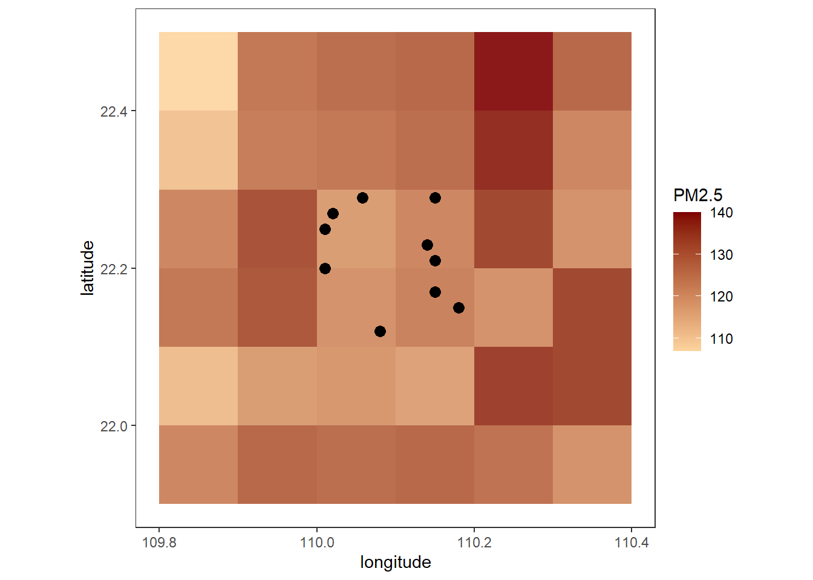

环境暴露评估
环境暴露数据种类
空气污染
CHAP
CHAP (ChinaHighAirPollutants)，由马里兰大学的研究院韦晶博士团队生成，使用数据免费，但需要跟韦博士签订协议， 高质量的文章需要带韦博士为共同通讯作者。CHAP数据种类多，空间精度高（大部分为1*1km的空间精度和日均数据），包含的污染物包括：
PM\(_{1}\) （1*1km，日均数据）2000-2021年
PM\(_{2.5}\) （1*1km，日均数据）2000-2021年
PM\(_{10}\) （1*1km，日均数据）2000-2021年
臭氧（O\(_3\)）（1*1km，日均数据）2000年至今
二氧化氮（NO\(_2\)）（10*10km，日均数据）2008年至今
二氧化硫（SO\(_2\)）（10*10km，日均数据）2008年至今
一氧化碳（CO）（10*10km，日均数据）2013年至今
6种PM\(_{2.5}\)化学组分（1*1km，日均数据）2000年至今
- 黑碳（black carbon）
- 有机物（organic matter）
- 硫酸盐（sulphate, SO\(_4^{2-}\)）
- 硝酸盐（nitrate, NO\(_3^-\)）
- 铵盐（ammonium, NH\(_4^+\)）
- 氯化物（ammonium, Cl\(^-\)）
16种环境多环芳烃（outdoor polycyclic aromatic hydrocarbons, PAHs）
- naphthalene (Nap)
- acenaphthene (Ace),
- acenaphthylene (Acy),
- fluorene (Flu),
- phenanthrene (Phe),
- anthracene (Ant),
- fluoranthene (Fla),
- pyrene (Pyr),
- benz[a]anthracene (BaA),
- chrysene (Chr),
- benzo[b]fluoranthene (BbF),
- benzo[k]fluoranthene (BkF),
- benzo[a]pyrene (BaP),
- dibenz[a,h]anthracene (DahA),
- benzo[ghi]perylene (BghiP)
- indeno[1,2,3-cd] pyrene (IcdP)
TAP
TAP (Tracking Air Pollution in China) 中国大气成分近实时追踪数据集，由清华大学的TAP团队开发。免费+开源，空间精度较低，现有10*10km的网格化数据产品，包含的污染物包括：
- PM\(_{2.5}\) （1*1km，日均数据）2000年至今
- PM\(_{2.5}\)化学组分 （10*10km，日均数据）2000年至今
- 黑碳（black carbon）
- 有机物（organic matter）
- 硫酸盐（sulphate, SO\(_4^{2-}\)）
- 硝酸盐（nitrate, NO\({_3^-}\)）
- 铵盐（ammonium, NH\(_4^+\)）
- 臭氧（O\(_3\)）（10*10km，日均数据）2013年至今
温度
绿植覆盖
夜晚灯光
环境暴露评估的时间窗口
短期
长期
环境暴露评估方式
地区水平
个体水平：
个体文本地址转经纬度
四川大学公共卫生学院的林小军教授开发的amapR，可使用高德地图API把具体的文本类型的地址转换成数值型的经纬度。
根据经纬度的双线性插值暴露评估
R代码及展示
文本地址转经纬度R代码
双线性插值
pacman::p_load(dplyr, raster, data.table, arrow, ggplot2, lubridate)
exposure = read_parquet('Data/exposure_grids.parquet', as_data_frame = T) %>%
mutate(longitude = round(longitude, 2),
latitude = round(latitude, 2))
exposure# A tibble: 252 × 9
longitude latitude date PM2.5 SO4 NO3 NH4 OM BC
<dbl> <dbl> <date> <dbl> <dbl> <dbl> <dbl> <dbl> <dbl>
1 110. 22.0 2014-01-01 120 21.1 31.1 20.3 31.9 5.95
2 110. 22.0 2014-01-02 123 26.2 29.5 24.0 29.0 5.01
3 110. 22.0 2014-01-03 128 30.3 28.5 23.7 30.2 5.70
4 110. 22.0 2014-01-04 138 23.5 29.9 22.7 43.1 8.82
5 110. 22.0 2014-01-05 142 24.6 32.0 23.0 43.0 8.15
6 110. 22.0 2014-01-06 108 25.8 17.4 15.8 32.7 6.57
7 110. 22.0 2014-01-07 79 18.9 11.0 10.6 25.0 5.75
8 110. 22.0 2014-01-01 119 21.2 30.8 20.0 31.5 5.92
9 110. 22.0 2014-01-02 122 25.6 29.4 24.2 28.7 5.02
10 110. 22.0 2014-01-03 117 27.7 25.9 22.0 27.4 5.13
# ℹ 242 more rowsindividual = data.frame(
longitude = c(110.08, 110.01, 110.15, 110.02, 110.18,
110.14, 110.058, 110.01, 110.15, 110.15),
latitude = c(22.12, 22.20, 22.21, 22.27, 22.15,
22.23, 22.29, 22.25, 22.17, 22.29))
individual longitude latitude
1 110.080 22.12
2 110.010 22.20
3 110.150 22.21
4 110.020 22.27
5 110.180 22.15
6 110.140 22.23
7 110.058 22.29
8 110.010 22.25
9 110.150 22.17
10 110.150 22.29ggplot() +
geom_tile(data = exposure %>%
filter(date == ymd('2014-01-03')),
aes(x = longitude, y = latitude, fill = PM2.5), alpha = 0.9) +
geom_point(data = individual, aes(x = longitude, y = latitude),
color = 'black', size = 3) +
scale_fill_gradient(low = '#fdd49e', high = '#7f0000') +
theme_test() +
coord_equal()
创造逐日的各污染物数据
exposure_PM2.5 = exposure %>%
filter(date == ymd('2014-01-03')) %>%
dplyr::select(longitude, latitude, PM2.5) %>%
rasterFromXYZ()
exposure_SO4 = exposure %>%
filter(date == ymd('2014-01-03')) %>%
dplyr::select(longitude, latitude, SO4) %>%
rasterFromXYZ()
exposure_NO3 = exposure %>%
filter(date == ymd('2014-01-03')) %>%
dplyr::select(longitude, latitude, NO3) %>%
rasterFromXYZ()
exposure_NH4 = exposure %>%
filter(date == ymd('2014-01-03')) %>%
dplyr::select(longitude, latitude, NH4) %>%
rasterFromXYZ()
exposure_OM = exposure %>%
filter(date == ymd('2014-01-03')) %>%
dplyr::select(longitude, latitude, OM) %>%
rasterFromXYZ()
exposure_BC = exposure %>%
filter(date == ymd('2014-01-03')) %>%
dplyr::select(longitude, latitude, BC) %>%
rasterFromXYZ()
exposure_BCclass : RasterLayer
dimensions : 6, 6, 36 (nrow, ncol, ncell)
resolution : 0.1, 0.1 (x, y)
extent : 109.8, 110.4, 21.9, 22.5 (xmin, xmax, ymin, ymax)
crs : NA
source : memory
names : BC
values : 4.45, 7.15 (min, max)用raster::extract()函数进行双线性插值污染物评估
eval_pollutant = individual %>%
mutate(
PM2.5 = raster::extract(
exposure_PM2.5,
individual[,c('longitude', 'latitude')],
method = "bilinear"),
SO4 = raster::extract(
exposure_SO4,
individual[,c('longitude', 'latitude')],
method = "bilinear"),
NO3 = raster::extract(
exposure_NO3,
individual[,c('longitude', 'latitude')],
method = "bilinear"),
NH4 = raster::extract(
exposure_NH4,
individual[,c('longitude', 'latitude')],
method = "bilinear"),
OM = raster::extract(
exposure_OM,
individual[,c('longitude', 'latitude')],
method = "bilinear"),
BC = raster::extract(
exposure_BC,
individual[,c('longitude', 'latitude')],
method = "bilinear"))
eval_pollutant longitude latitude PM2.5 SO4 NO3 NH4 OM BC
1 110.080 22.12 120.150 26.8370 27.00720 22.61350 28.59970 5.29940
2 110.010 22.20 124.000 27.2450 28.14700 23.35500 29.50200 5.36700
3 110.150 22.21 122.400 26.5660 28.80400 22.79400 28.75000 4.82200
4 110.020 22.27 122.700 26.7076 28.37780 22.86780 29.10480 5.06060
5 110.180 22.15 122.100 27.2320 27.42400 22.90800 29.04700 5.35900
6 110.140 22.23 121.820 26.2888 29.01320 22.64500 28.48460 4.66500
7 110.058 22.29 121.056 26.1756 28.49144 22.49096 28.49296 4.73488
8 110.010 22.25 123.600 27.0420 28.35000 23.07400 29.37600 5.24400
9 110.150 22.17 122.800 27.0420 28.06800 22.93800 29.15000 5.19400
10 110.150 22.29 124.000 26.4700 29.98000 23.05400 28.82600 4.53800